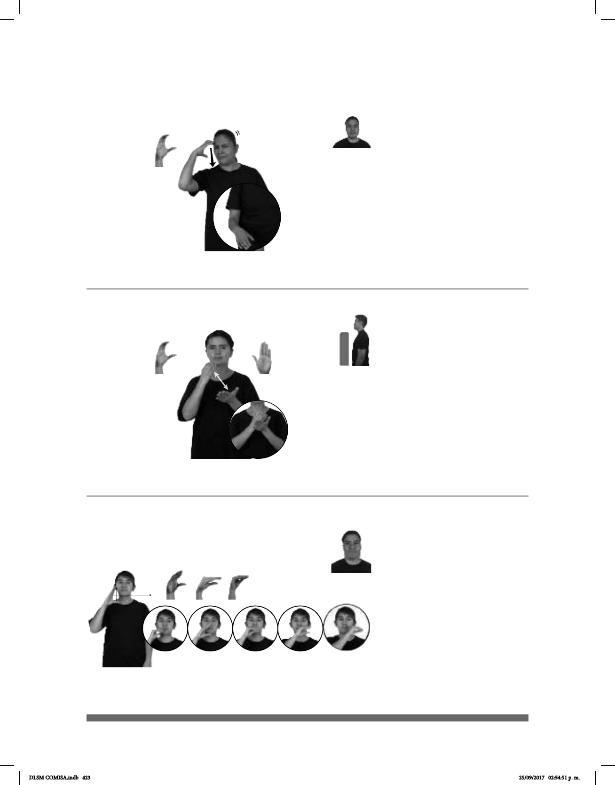

423
Seña: SM
C.1
Palma hacia la izquierda.
Sobre las cejas y se desliza
hacia la cintura.
La mano se agita una
sola vez.
Ceño fruncido.
1. adj. Que hace sufrir a las
personas o a los animales, que no siente
compasión por ellos cuando sufren. 2.
sust. m. Delito grave.
Seña: SB
MD C.1, MB B-P.2
MD palma oblicua
hacia la izquierda y hacia adentro MB
palma oblicua hacia la derecha y hacia
adentro.
MD y MB a la altura del
pecho.
La MD golpea la MB en
línea recta repetidamente.
sust. m. Conjunto de hojas
de papel unidas por uno de sus lados
con hilo, grapas, etc. y con dos
cubiertas generalmente de cartón que
sirve para escribir o dibujar en él.
(C-82)
(C-83)
MALTRATO ANIMAL CRIMEN
El maltrato animal es un crimen.
CUADERNO pro-YO NECESITAR
Necesito un cuaderno.
Seña: SM
Seña que pasa de C.1
a O.1
Palma hacia la
izquierda.
A la altura de la boca del
lado derecho al lado izquierdo.
Recto mientras el pulgar
se aproxima a los dedos de la mano.
País del Caribe americano
cuya capital es la Habana. 2. Bebida
alcohólica preparada con refresco de
cola y ron.
1
2
____muy
CUBA
allá
CALOR
En Cuba hace mucho calor.
DLSM COMISA.indb 423 25/09/2017 02:54:51 p. m.